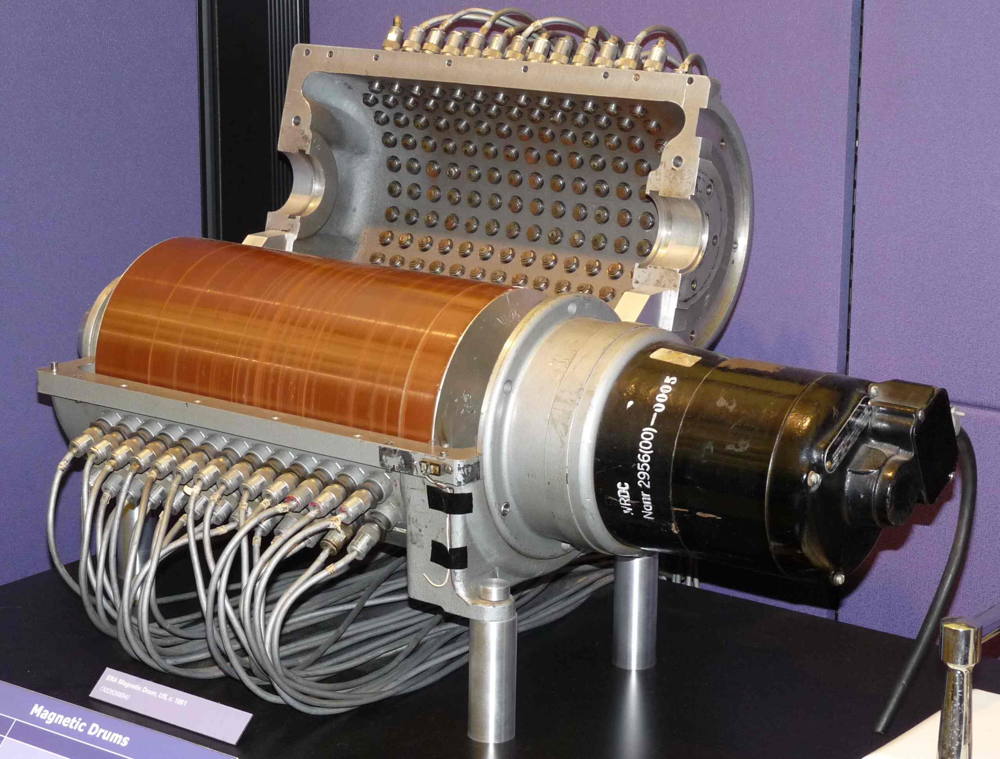
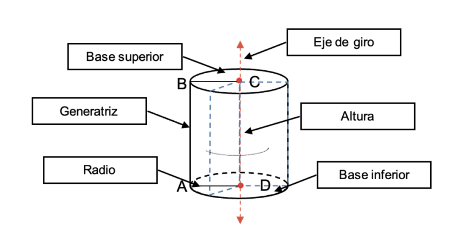

¿Por qué las bases de datos se representan con un cilindro?
Teoría de la influencia de la memoria de tambor
Esta teoría fue aplicada entre las décadas de 1930 y 1950. Cuando, anterior a la aparición de los discos magneticos, se utilizaba la memoria de tambor magnético entre otros dispositivos.
Estos dispositivos consitían en un cilindro metálico giratorio recubierto de material magnético, con cabezales de lectura/escritura distribuidos a lo largo de su superficie. La organización de los datos dependía directamente de la rotación del tambor, lo que implicaba un acceso secuencial condicinado por el movimiento de este.

Teoria de la herencia del almacenamiento en discos magnéticos
Esta teoría sostiene que la representación cilíndrica de las bases de datos tiene origen en la arquitectura física de los primeros dispositivos de almacenamiento masivo, particularmente los discos duros tempranos.
Durante la década de 1950 y 1960, sistemas como el IBM 305 RAMAC utilizaban múltiples platos magnéticos apilados verticalmente alrededor de un eje central. Etsa disposición generaba una estructura tridimensional que podía interpretarse como un cilindro al simplificarse visualmente.
Desde la perprectiva técnica, los datos no se organizaban en cilindros, sin embargo si existía el concepto de Cilindro de almacenamiento, que agrupaba pistas alineadas verticalmente a través de los diferentes platos. Fue por esto que se reforzó la asociación de "almacenamiento" con el cilindro
Teoría de la metáfora de la Persistencia
Esta teoría plantea que la representación de las bases de datos mediante un cilindro no busca reflejar su estructura interna ni su origen físico, sino comunicar visualmente una propiedad fundamental: la persitencia de los datos
En los sistemas informáticos, la persistencia es la capacidad de la información de permaneceer almacenada de forma estable a lo largo del tiempo, independientemente de la ejecución de programas o del estado temporal del sistema. Es decir, os datos no desaparecen cuando se apaga el sistema, ni dependen de procesos momentáneos. Desde esta perspectiva, el cilindro funciona como un símbolo conceptual que transmite: Almacenamiento duradero, Independencia del procesamiento, Continuidad temporal y Abstracción del medio físico
